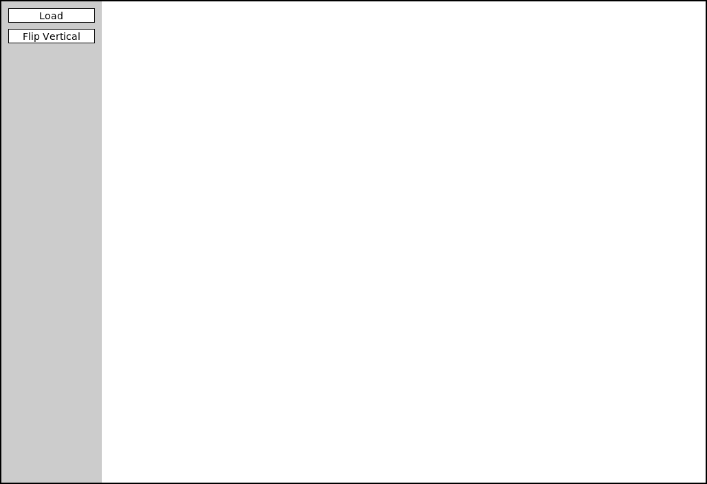
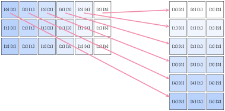

Constructing Types
Jed Rembold
March 16, 2026
Last Monday before Spring Break!
- Scan the QR code or go to https://tools.jedrembold.prof/daily
- Fun group question: What piece of technology do you use every single day that you have zero idea how it works internally? How does this relate to the abstraction boundary?

Quick Announcements
- Problem Set 5 due tonight!
- ImageShop is this week! Introducing later today
- Office hours from 2-2:40 today, or after 5:30pm
Perusall Guidelines
- Perusall determines scores for an assignment based on a combination
of factors:
- What percentage of the video did you want?
- How much active engagement time did you spend with the video?
- How much did you interact with any of the community commentary?
- Asking questions?
- Answering others questions?
- Upvoting questions or answers?
- These all sum to over 100% of the 3 possible points, so there is room for some flexibility
- Most common improvements for most students: don’t watch on increased speeds and engage more in the comments
Daily LO’s
- Why would we create a custom data type?
- What is the abstraction boundary, and why do we care?
- How do we create a basic class?
- How can we add attributes to a class in a constructor method?
Group Problems
Problem 1: Tracing Cars
What is printed out on the final line of code to the right?
Honda red 2006Honda blue 2006Toyota blue 2008Honda red 2008
class Car:
def __init__(self, color, year):
self.color = color
self.year = year
self.make = 'Toyota'
A = Car('blue', 2008)
A.make = 'Honda'
B = Car('red', 2006)
A.year = B.year
print(A.make, A.color, A.year)Problem 2a: A Classy Song
- This is a coding problem. Work in pairs or trios on a single computer, and discuss your algorithm BEFORE YOU WRITE ANY CODE.
- Your task:
- You want to define a class to hold information about a single song
- You desire to store several attributes:
title,artist, andduration_sec - Define the class and write the necessary constructor
Problem 2b: Genres
- Swap who is typing!
- Suppose you realized you also want to track
genresin your class, and so add as an attribute - What data-type will the value be that is assigned to the
genresattribute? You get to choose, but have a reason for why you chose what you did! - Implement this new attribute into your class
Problem 2b: Personal Taste
- Swap who is typing!
- For each member in your group, get at least two of their favorite songs
- Create a song object for each song (look up values online as needed)
and add them to a list called
playlist
Problem 2d: Play Time
- Swap who is typing!
- Write a function that loops through each song in the playlist, and then prints the total playlist duration to the screen.
- Bonus: Also print out all the different genres covered within the playlist
ImageShop
Starting

- ImageShop initially has only two buttons
- “Load” will bring up a file selection box where you can choose what
image to display
- Internally, this is handled by a function that returns the chosen file path
- “Flip Vertical” is the example feature button that flips an image vertically
- “Load” will bring up a file selection box where you can choose what
image to display
Big Picture
- Each milestone in ImageShop boils down to:
- Adding a button to the window to handle a new feature
- Writing a simple callback function that sets the new image to be equal to the output of a new function you’ll write
- Writing that function, which will generally return a
GImagetype object
- You are always free to write whatever other helper functions you might like!
So Many Files!
- ImageShop is the first project to start leveraging multi-file
layouts:
- Some functions will already be provided in
GrayscaleImage.pythat you can import into your main program - You are encouraged to write the necessary functions for Milestone 4 in their own file and import them in accordingly
- I’ve seen you all scrolling madly around trying to find the code you want. This helps with that!
- Some functions will already be provided in
- Just make sure you save a file after editing!
- See a circle in the tab for a file in VSCode? That file has not been saved!
GButtons
- To help facilitate working with buttons, ImageShop introduces a new
type called
GButton - There is nothing magical about these! They are just pre-bundling PGL concepts that you already know like labels and mouse click events
- Each
GButtongets a label and a callback function name that determines what function is called when that button is clicked - ImageShop will come with a pre-defined
add_buttonfunction which will take care of adding a new button to the correct part of the screen.- You’ll just need to provide it a label and function name to callback to
The Current Image
- ImageShop holds the
GImagecurrently displayed on the window in a variable (really an attribute) calledgw.current_image - The variable is specifically added as an attribute to
gwso that you will have access to it in any callback function you write - This will generally be the input to your various image manipulation functions, since most of those functions work with whatever image was currently displayed on the screen
- Your callback function should run
set_imageon the output of your manipulation function, which will take care of updating the value ofgw.current_imageand displaying the new image in the window
Milestone 0
- Milestone 0 has you adding a “Flip Horizontal” button
- Add the button
- Add the action callback function
- Write a function to manipulate the pixels to flip the image horizontally
- Slightly more complicated than the example function, but not much
Milestone 1
- Here you will add buttons to rotate the image left or right (or CW or CCW if you prefer)
- Most of the difficulty comes in keeping track of of rows and columns
- Need to create a new list of lists of the correct dimensions
- Need to copy over the pixels from the original to the needed location in the new list

Milestone 2
- Here you’ll add a button to convert an image to grayscale
- If you understand the other library files that have been given to you as part of the project, this milestone should be the simplest!
- Don’t copy. Import!
Milestone 3
- Here you get to enable a green screen effect!
- Unlike other buttons, when this one is clicked, you should use the
file chooser library to prompt the user to select another image
- This is the image that will be overlaid on whatever image is currently shown on the screen
- You will want to start with an “empty” pixel array with the same dimensions as the background
- This will closely mimic our in-class example from Friday, where
depending on how “green” a pixel is, you will choose between different
choices
- If green enough, you will copy the pixel from the background image to your new pixel array
- If not green enough, you will copy the pixel from the foreground image to your new pixel array
Milestone 4
- Here you’ll implement one algorithm for increasing dynamic contrast across an image!
- Doing so requires several steps and different functions. It can be
convenient to place these in their own file and import them into
ImageShop.pyas needed.- Compute all the pixel luminosities
- Construct a histogram of these luminosity counts
- Your histogram should have 256 elements, one for each possible luminosity
- Construct a cumulative histogram using your histogram
- Use the cumulative histogram to adjust the luminosity of each pixel in the pixel array
- You don’t need to display the visual histograms! But they can be a
great way to check that you are doing the other parts correctly.
- Related to Problem 1 on PSet 5
Extensions
- Give yourself time for extensions on this project!
- They are easy! Just come up with interesting or cool graphical effects and add a button for them!
- You’ll look at several this week in your section meetings
- Adding these in your project is encouraged and will be regarded as “sub-extensions”, but come up with your own as well!
- Accidentally make a mistake but think it looks cool? Save it! Make it a feature!!